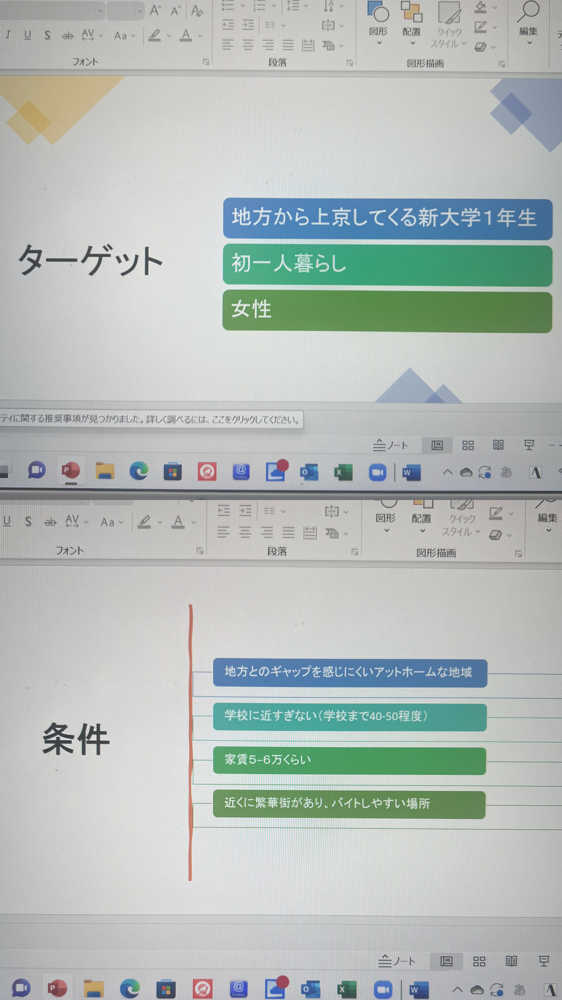
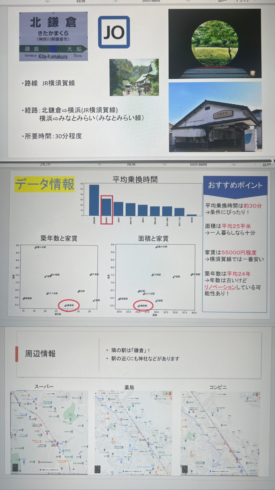

おすすめの駅紹介

まず、ターゲットと条件をこのように設定して駅を探した。

登戸駅は他の駅よりも家賃は高めだが、平均面積と築年数をトータルで見たら一番バランスが良かった。
スーパー・薬局・コンビニも駅周辺にたくさんあり、娯楽施設は少ないが、すぐに都心に行けることから、地元感を感じられて、都会にもいける登戸駅を選んだ。

北鎌倉駅は、横須賀線の中で最も家賃が安く、面積も一人暮らしに十分な広さだった。築年数は古いけどリノベーションされている可能性もあり、良かった。
登りと同様に、駅付近も生活するために必要なところが充実していて、隣の駅には鎌倉駅があるため、充実した一人暮らしが出来そうな鎌倉駅を選んだ。

どちらの駅も都会過ぎず落ち着いて暮らせることと、すぐに都心などにいけることら、地方から来た女子大生にお勧めする駅として選んだ。